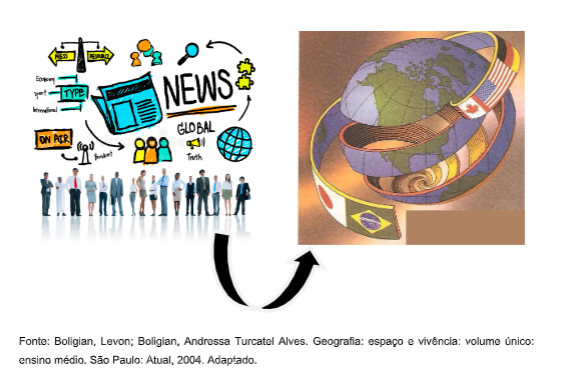

Capítulo 4: Representação Espacial
Questão:O que é cartografia? Você percebe a cartografia presente no seu dia-a-dia? Em que momentos?
Observe as imagens a seguir:
Neste capítulo vamos estudar a representação do espaço. A cartografia é a ciência que estuda e representa a Terra por meio de mapas, utilizando recursos e técnicas específicas para representar os fenômenos físicos e humanos localizado no espaço geográfico A representação do espaço está presente na humanidade mesmo antes da invenção da escrita. Os seres humanos utilizavam símbolos e desenhos para representar seus lugares, as paisagens que os rodeavam, bem como seus territórios. Com o avanço da tecnologia, o registro cartográfico foi se tornando cada vez mais acessível para a população estando hoje disponível nos smartphones, automóveis, entre outros. Podemos representar a Terra através de globos terrestres artificiais e de mapas. O globo é o modo mais fiel de representar a Terra. Porém, as representações por meio de mapa são as mais práticas. Mapa é representação reduzida e plana da superfície terrestre, no todo ou em parte. Os elementos essenciais para um mapa são: o título, a escala; a projeção; a legenda e as coordenadas.
ORIENTAÇÃOOrientação é a identificação da posição de um objeto tendo como referência pontos de natureza conhecida. E quais seriam essas referências? Podem ser astros como o sol, a lua e as estrelas.
Ação e Reflexão1) Pesquise e registre em seu material como é possível se orientar por meio da observação dos astros.
2) Observe e analise a imagem abaixo e complete o exercício em seu caderno. A rosa dos ventos


 ESCALAS
ESCALAS
 Ação e Reflexão
Ação e Reflexão
Além da representação espacial, podemos utilizar a escala para estabelecer a relação entre o desenho de uma peça de tecido. Por exemplo, imagine um desenho de uma peça de tecido que tem 12cm de comprimento. Na imagem consta a informação de que a peça foi representada em uma escala numérica de 1/200. Quantos metros de comprimento tem o tecido na realidade?
Classificação das escalas: Ação e Reflexão
Ação e Reflexão
Pesquise diferentes mapas e anote suas escalas, as áreas que representam, bem como as informações que você visualiza.
FUSOS HORÁRIOSA rotação da Terra é feita de oeste para leste. É por isso que o Sol e os astros nascem no leste e se põem no oeste, logo todos os meridianos passam pela frente do Sol em algum momento do dia e vindo a repeti-lo após 24 horas. Se uma circunferência possui 360 0 e o dia 24 horas, cada 15 0 serão iguais a 1 hora (hora legal).
Portanto um fuso horário equivale a um espaço de 15º.
No Brasil a hora legal vigora desde 1 0 de janeiro de 1914, seguido de vários países. Nosso país tem 4 fusos horários que estão todos a oeste do meridiano de Greenwich, logo estão com os horários atrasados em relação ao meridiano 0
O fuso horário oficial do Brasil é o que determina a hora legal no país e corresponde a três horas de atraso em relação a Londres.
a)Primeiro fuso: ilhas oceânicas (2 horas menos que Greenwich).
b)Segundo fuso: região Sul, Sudeste, Nordeste (- FN), Goiás, leste do Pará, Amapá e Tocantins (3 horas menos que Greenwich).
c)Terceiro fuso: regiões Centro- Oeste e Norte (4 horas menos que Greenwich).
d) Quarto fuso: parte da região norte (Acre) (5 horas a menos que Greenwich).